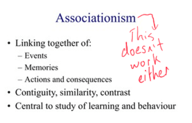

The conception of the soul is possibly the earliest known concept of psychological phenomena. In various philosophical and religious traditions, the soul is believed to be the essence of a person's being and the source of their thoughts, emotions, and behaviors. This concept was central to the work of many early psychologists, including Plato and Aristotle, who explored the nature of the soul and its role in shaping human behavior. It was the most natural way of unifying concepts than were non-physical, and so resulted in the birth of an orthodox 'spiritualistic' theory that asserted the exisitence of non-physical entities.
Here, I would endeavour to draw the reader's attention to a particular point of interest, as we no doubt will hit upon this issue as the most fundamental in the field. What I am refering to, is the idea of 'unifying' psychological phenomena around some central idea to which they would all have equal relevance - perhaps even in a philosophical way. As primitive as the idea of the soul is, it provided exactly this for anyone that attempted an understanding of the mind in humanity's early days.
Fast forward to the 18th and 19th century and we have another approach to unifying psychological phenomena know as associationism. Associationists believed that the human mind is composed of simple ideas that are associated with each other through experience. This means that complex thoughts and behaviors are formed by combining and associating simple ideas.

Associationism is thought to occur through various mechanisms, such as contiguity (when two things are experienced together), similarity (when two things share common characteristics), and contrast (when two things are experienced as opposites). The attempt to utilize such mechanisms as blunt instruments that are void of meaning and relevance is very problematic. This is because the mechanisms themselves can be considered to be psychological phenomena, as they engender a facet of the human existence and experience that is uniquely classified by our own intelligence and understanding.
Alongside this, we have many other ideas that came including Struturalism, Functionalism, Behaviorism, Gestalt Psychology and Psychoanalysis to name a few. The relevance of the Brain as it concerns its influence on all aspects of understanding and behaviour also began to play a significant part in our understanding of psychological phenomena. For the purposes of the information that is presented here, it will suffice to end this introduction without further elaboration on these ideas, as they are none too few.
The following article will go through the timeline of the most important psychological ideas with a brief review of each. However, it should be noted that my general intentions with subsequent articles are to deal with psychological phenomena themselves and speak to the relevant frameworks and theories as the need arises. Recent strides in Machine Learning and AI development have given yet another path to understanding the mind - hopefully, one that will prove much more fruitful than the others. An exclusive examination of psychological phenomena absent a major framework or theory is much more rewarding in this regard.